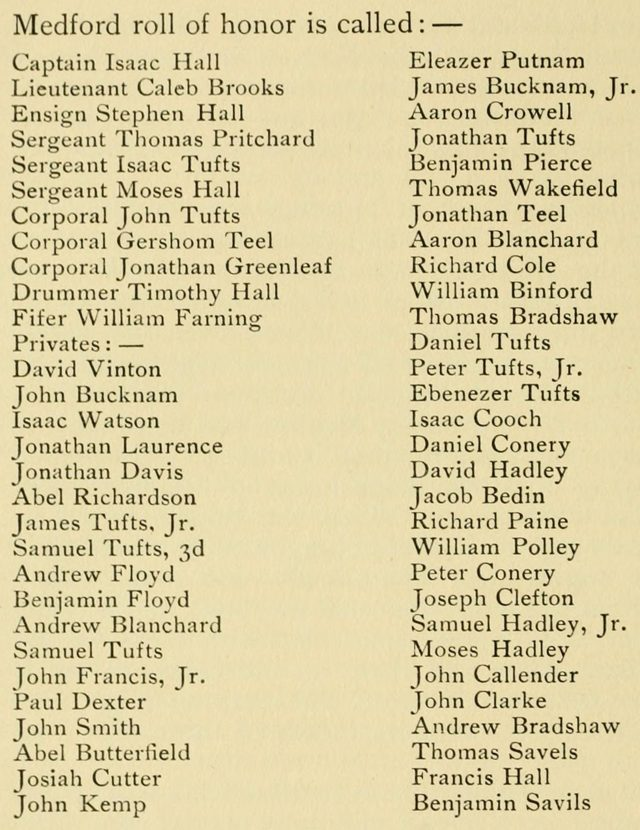

Biography

Daniel Tufts marched with Capt. Isaac Hall’s Medford company on the Lexington alarm of April 19, 1775. In July 1778 he served with the guards stationed at Winter Hill. Wild records that he lived near the Powder House, and that the land under his house was set off to Charlestown in 1811 (see Places). In 1788 he sold the farm opposite the Powder House to his cousin Peter Tufts (Booth, Historic Leaves vol. 1, p. 22).
Service Record
Town: Medford · Dates: [dates not confirmed]
“Tufts, Daniel, Medford. Private, Capt. Isaac Hall's co., Col. Thomas Gardner's regt., which assembled April 19, 1775; service, 5 days”
Massachusetts Soldiers and Sailors of the Revolutionary War, vol. XVI (1907), p. 132
“Capt. Nathan Sargeant's co., Col. Jacob Gerrish's regt. of guards; detached July 2, 1778; service to July 17, 1778, 15 days; regiment stationed at Winter Hill.”
Massachusetts Soldiers and Sailors of the Revolutionary War, vol. XVI (1907), p. 132
Family Connection
Family placement not yet established from a cited source.
Relatives with profiles on this site: father Nathan Tufts, cordwainer; son Charles Tufts (1781–1876), founder of Tufts College; son Daniel Tufts Jr. (1776–1868), tanner; son Gilbert Tufts (1778–1850), tanner; son Nathan Tufts “2d” (1786–1872), brick-maker; nephew Joseph F. Tufts (1790–1854).
Spouse(s)
- Abigail Tufts (Wyman’s Tufts [69]). Named as his wife in Wyman, vol. 2, p. 968; date and place of marriage are not given there.
Authoritative IDs / Index Numbers
| Source | ID / status |
|---|---|
| Perseus person index (auth=) | auth=tufts,daniel. This is a name-level key shared by every Daniel Tufts in Perseus, not a personal ID. Use it with the passages cited on this page. |
| Find a Grave memorial | Note: Pending further work. |
| Brooks, History of Medford (1855) register no. | Checked, no entry confidently matched |
| Mass. Soldiers and Sailors | vol. XVI, p. 132 |
| DAR ancestor no. | Note: Pending further work. |
| FamilySearch ID | Note: Pending further work. |
| Geni profile | Note: Pending further work. |
| WikiTree ID | Note: Pending further work. |
| Town / vital records | Medford VRs not yet checked by volume and page |
Only IDs confirmed against dates and family are given as matches. “Not yet checked” means the source has not been searched; “Checked, not found” means it was searched without a match.
⚑ Unverified
His dates and parents. That the Daniel of this record is the Daniel of the Powder House farm is likely but not confirmed.
Medford Roll of April 19, 1775
Listed as “Daniel Tufts” on the Medford roll of Capt. Isaac Hall’s company called in “The Route of Revere” (Medford Historical Register, vol. XXIV, no. 1 (March 1921), “The Route of Revere,” pp. 21–22. Internet Archive). See Places.

Medford roll of honor is called: — Captain Isaac Hall, Lieutenant Caleb Brooks, Ensign Stephen Hall, Sergeant Thomas Pritchard, Sergeant Isaac Tufts, Sergeant Moses Hall, Corporal John Tufts, Corporal Gershom Teel, Corporal Jonathan Greenleaf, Drummer Timothy Hall, Fifer William Farning. Privates: — David Vinton, John Bucknam, Isaac Watson, Jonathan Laurence, Jonathan Davis, Abel Richardson, James Tufts, Jr., Samuel Tufts, 3d, Andrew Floyd, Benjamin Floyd, Andrew Blanchard, Samuel Tufts, John Francis, Jr., Paul Dexter, John Smith, Abel Butterfield, Josiah Cutter, John Kemp, Eleazer Putnam, James Bucknam, Jr., Aaron Crowell, Jonathan Tufts, Benjamin Pierce, Thomas Wakefield, Jonathan Teel, Aaron Blanchard, Richard Cole, William Binford, Thomas Bradshaw, Daniel Tufts, Peter Tufts, Jr., Ebenezer Tufts, Isaac Cooch, Daniel Conery, David Hadley, Jacob Bedin, Richard Paine, William Polley, Peter Conery, Joseph Clefton, Samuel Hadley, Jr., Moses Hadley, John Callender, John Clarke, Andrew Bradshaw, Thomas Savels, Francis Hall, Benjamin Savils.
Transcription of the clipping above: Medford Historical Register, vol. XXIV, no. 1 (March 1921), “The Route of Revere,” p. 22. View the page scan
Daniel Tufts, Brick-maker (1753–1839)
Wyman’s Charlestown genealogy identifies the Daniel Tufts who sold the 33-acre farm to his cousin Peter Tufts in 1788 as the brick-maker, son of Nathan Tufts, cordwainer. This matches Booth’s account of the farm opposite the Powder House, so this page and Sawyer’s brick-maker are the same man.
“Daniel 50, Bro. of Nathan 49; Medford &c.; brickmaker; m. Abigail Tufts [69]; d. April 27, 1839, æ. 85. Issue.—i. Daniel, b. Dec. 31, 1776. ii. Gilbert, April 27, 1778. iii. Charles, July 17, 1781. iv. Nathan, March 10, 1786. Estate.—Sells Peter Tufts, 33 acres part Medford part Chas. … 1788.”
Thomas Bellows Wyman, The Genealogies and Estates of Charlestown, vol. 2 (Boston, 1879), p. 968. Internet Archive
He was born December 27, 1753, the second child of Nathan Tufts and Mary Adams, who married June 6, 1751 (Thomas Bellows Wyman, The Genealogies and Estates of Charlestown, vol. 2 (Boston, 1879), p. 967. Internet Archive). Wyman’s estate notes show him buying and selling Charlestown lots with his brothers Amos and Nathan from 1788 to 1817: on Wapping Street, Ludkin Lane, Canal Street, and the Medford road, plus a wharf (p. 968). Sawyer adds that he lived outside the Neck and represented Charlestown in the House of Representatives in 1811 and 1812 (Timothy T. Sawyer, Old Charlestown: Historical, Biographical, Reminiscent (Boston, 1902), p. 162. Internet Archive). His son Charles Tufts gave Walnut Hill to Tufts College. His sons Daniel Jr. and Gilbert were tanners, and Nathan was a brick-maker (Sawyer, pp. 163–164).
⚑ Unverified
Wyman also lists another Daniel Tufts, born March 30, 1759, who married Rhoda Wyman. The Lexington-alarm and 1778 Winter Hill service on this page is credited to “Daniel Tufts, Medford.” It most likely belongs to this man (aged 21 in 1775, a Medford resident, and Brooks’s Daniel who married Abigail Tufts), but that is not proved. Note: Pending further work.
Sons
His four sons now have profiles: Daniel Tufts Jr. (1776–1868), the Main Street tanner and Charlestown legislator; Gilbert Tufts (1778–1850), tanner, of Nathan Tufts & Co.; Charles Tufts (1781–1876), donor of Walnut Hill; and Nathan Tufts “2d” (1786–1872), brick-maker and farmer on Cambridge Street in Somerville (Wyman, p. 968; Sawyer, pp. 162–164).
Links and Resources
Every source, record, map, survey, marker and artifact tied to this person, gathered in one place. Page numbers are given where a book is cited.
Markers, Plaques and Places
- Places — …on the Lexington alarm of April 19, 1775. In July 1778 he served with the guards stationed at Winter Hill. Wild records that he lived near the Powder House, and that the land under his house was set off to Charlestown in 1811
- Places — Listed as “Daniel Tufts” on the Medford roll of Capt. Isaac Hall’s company called in “The Route of Revere” (Medford Historical Register, vol. XXIV, no. 1 (March 1921), “The Route of Revere,” pp. 21–22. Internet Archive).
Digitized Books and Journals
- Listed as “Daniel Tufts” on the Medford roll of Capt. Isaac Hall’s company called in “The Route of Revere” (Medford Historical Register, vol. XXIV, no. 1 (March 1921), “The Route of Revere,” pp. 21–22. · Internet Archive
- Thomas Bellows Wyman, The Genealogies and Estates of Charlestown, vol. 2 (Boston, 1879), p. 968. · Internet Archive
- …(p. 968). Sawyer adds that he lived outside the Neck and represented Charlestown in the House of Representatives in 1811 and 1812 (Timothy T. Sawyer, Old Charlestown: Historical, Biographical, Reminiscent (Boston, 1902), p. 162. · Internet Archive